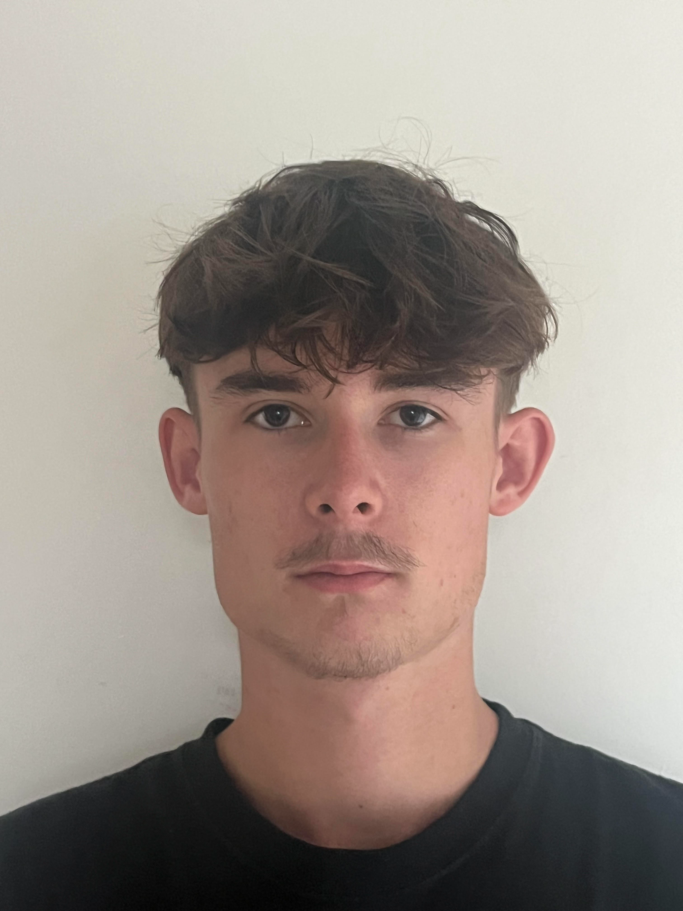

Étudiant en BUT Réseaux & Télécommunications
IUT de Caen Normandie - Campus d'Ifs

Actuellement étudiant en BUT R&T, je développe des compétences en administration système, réseaux et cybersécurité. Mon cursus me permet d'allier théorie et pratique à travers des projets concrets.
Je souhaite m'orienter vers après mon BUT.
Chaque SAÉ est accompagnée d'une analyse réflexive et des traces de mes apprentissages.
Mise en place d'une infrastructure réseau locale sécurisée.
Consulter l'analyse →Maîtrise de la configuration des équipements actifs et protocoles de routage.
Capacité à rédiger des documents techniques et travailler en équipe (SAÉ).
Automatisation via scripts Python et création d'applications web.
Actuellement étudiant en BUT Réseaux & Télécommunications à l'IUT de Caen Normandie, je me passionne pour la conception d'architectures réseaux et la sécurisation des systèmes d'information.
Mon cursus m'a permis d'acquérir une base solide en administration système (Linux/Windows) et en configuration d'équipements Cisco. Curieux de nature, j'aime relever des défis techniques, que ce soit à travers le développement de scripts d'automatisation ou l'optimisation de topologies réseaux.
En dehors de l'informatique, je cultive mon esprit d'équipe sur les terrains de rugby et ma créativité à travers la production musicale. Ces passions m'ont appris la rigueur et la persévérance, des qualités que j'applique dans chacun de mes projets techniques.
Caen, Normandie
BUT R&T (1ère année)
Alternance en Cybersécurité